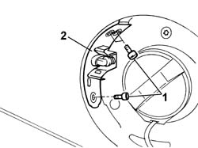
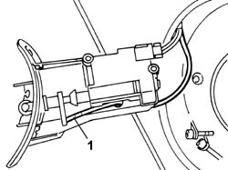

7025C28 FUEL FILLER FLAP EMERGENCY OPENING CONTROL - REPAIR
- Path
- Procedures > 70 FITTINGS > 7025 COMPARTMENT LIDS > 7025C VARIOUS FLAPS (EXTERIOR) > 7025C28 FUEL FILLER FLAP EMERGENCY OPENING CONTROL - REPAIR
- Kind
- repair procedure (removal / refitting; the operation number is the code)
- Applies to
- all engines; all production periods
- Interactive page
- https://sloeber94.github.io/elrnDB-aGt/en/#/125001834
Applies to: all engines; all production periods
 Removing
Removing
 Refitting
RefittingOpen the tailgate.
Secure a sensor cable to the emergency cord to faciliate its subsequent refitting.
Open the fuel filler access flap.
1. Undo the retaining bolts.
2. Extract the flap opening control actuator complete with mounting bracket/fuel flap striker.

Applies to: all engines; all production periods
1. Release the emergency control from the shutter and from the sensor cable.

Applies to: all engines; all production periods
Refitting
RemovingSecure the emergency control to the shutter and to the sensor cable.
Pass the emergency control inside the luggage compartment using the sensor cable.
Release the emergency control from the sensor cable.
Position the striker and actuator and secure it using the bolts.
Check the operation of the emergency control for opening the fuel flap.